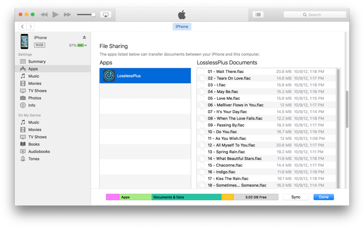
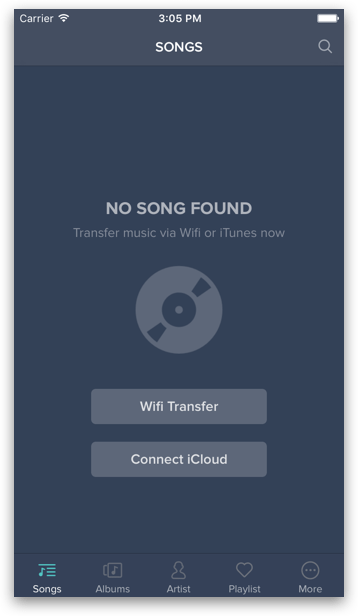
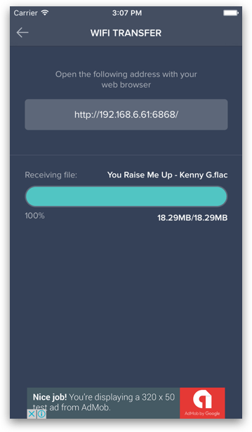
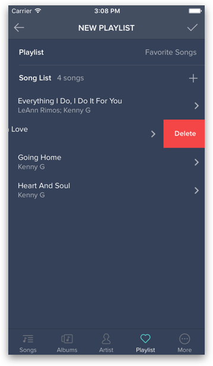
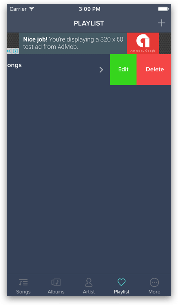
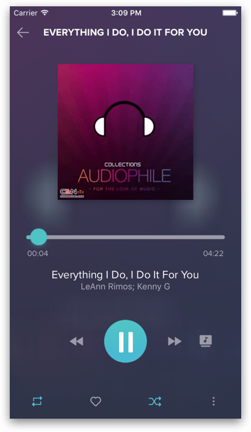

Open your iTunes App > Devices > Select your iPhone device > File Sharing
Drag your music files to Lossless Plus’s Document Directory

Make sure your iPhone is connected to a Wi-Fi Network
Open Lossless Plus and select Start Wifi Transfer from More Tab (or you can select Wifi Transfer button when you have no song)

Open your favorite browser from your PC / MAC and access to Lossless Portal by entering the URL as in the screenshot below:

Start transfer your songs collections by Click on Upload
To create a playlist, tap on [+] Button at Playlist Tab then fill the name for your playlist and select the music files you want to add then tap on [✓] Button

To edit or delete a playlist, swipe your playlist to the left and select the corresponding button as the screenshot below:


By default, Lossless Plus support Multi-Tasking mode so you can always free to listen to your favorite songs while doing other stuff on your phone.